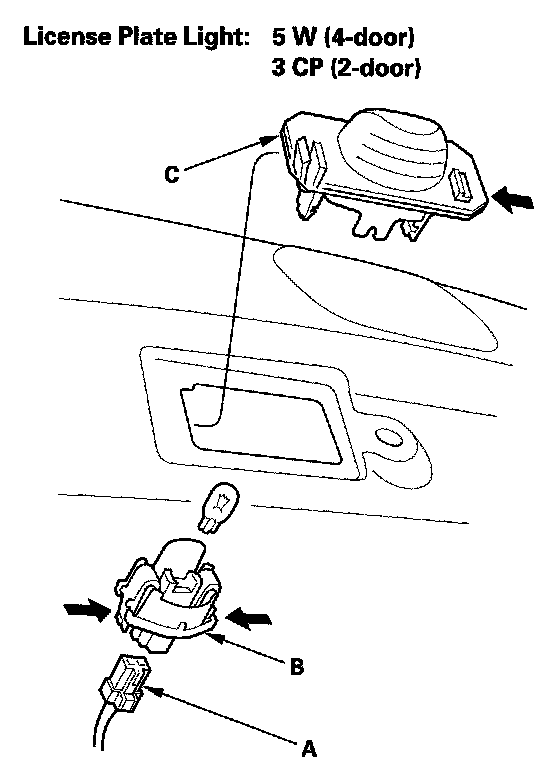

License Plate Lamp: Service and Repair
License Plate Light Replacement1. Open the trunk lid, and remove the rear license trim.

2. Disconnect the 2P connector (A) from the license plate light.
NOTE: The illustration shows the 4-door, the 2-door is similar.
3. Release the bulb socket (B) from the lens (C) by pressing on the tabs.
4. Remove the lens from the trunk lid by pressing on the tabs.
5. Install the light in the reverse order of removal.